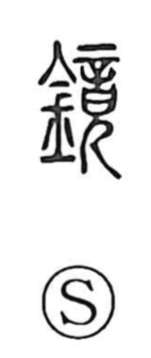

鏡

Kun: kagami | On: kyo
mirror
Explanation
鏡 is a phono-semantic character in which 竟 (kyo) serves as the phonetic, giving the on-reading, and the graph as a whole names the kagami, a mirror. In earlier times people viewed their reflections in water held in a vessel; this water mirror was called 鑑, whose parent graph 監 shows the act of looking down into a basin. With the advent of the bronze-vessel age, true metal mirrors appeared and artisans could produce exquisitely crafted pieces—exemplified by the copper mirrors excavated from the tomb of the Shang queen consort Fu Hao, about 3,300 years old.